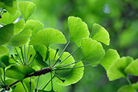
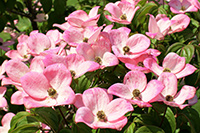
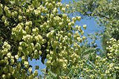

Last month we covered a few species of trees and what purpose they can serve in your yard. This month we’re going to continue this thread with some more tree species that tree companies in Ocean County love to see in yards. Not all trees need to serve a specific purpose, but if they can add beauty and provide an additional benefit, all the better. We can’t pass up the opportunity to remind all homeowners that professional tree care is the best way to enhance both the beauty and safety of all your trees. No matter what the species or the purpose, weak and sickly trees can be a danger to your property. Tree service is in season all year long so contact us today to get a free estimate on potential tree care in your yard.
Ginkgo Biloba is More Than an Herb

These trees are real beauties. With gorgeous fan-shaped leaves, these trees love the sun and sandy soil of Ocean and Monmouth counties. They are super hearty and Ginkgo Biloba trees are said to have been one of the only trees to survive Hiroshima. If you do any research at all on adding a Ginkgo tree to your yard, you are very likely to find out that the fruit of the female Ginkgo tree has a very foul odor. Thus, many homeowners that want to add one of these pretty trees to their landscape choose a male-only cultivator like the Autumn Gold Gingko.
Ginkgo trees are slow-growers and make great shade trees. In addition, they are often found lining city streets due to their high-tolerance to stressors. They are also resistant to many pests and diseases. They can reach a height of 50 to 80 feet depending on the species. As far as tree care goes, these trees are fairly low-maintenance and can thrive in almost any kind of soil.
Tree Companies in Ocean County are Very Familiar with the Flowering Dogwood

When many think of an ornamental tree, they often think of topiary-type trees. But when it comes to adding beauty and interest to a yard, no tree does it better than the Flowering Dogwood. Coming in varieties of white, pink, and red, these trees bloom in the spring and show off vivid colors in the fall. People aren’t the only ones who enjoy the Dogwood tree. Wildlife is attracted to these trees’ beautiful red berries. Dogwood trees are mostly known as under-canopy trees preferring shade to full-sun. However, with excellent care by its owner along with professional care by tree companies in Ocean County like Ben Bivins Tree Experts.These favorite trees grow to be on average about 30 feet tall and spread about 30 feet wide so be sure to give them plenty of space. They require minimal care once well-established so are great for all homeowners. They do not need a lot of pruning or trimming and demand little interference in terms of fertilization. There is not much bad to say about a flowering dogwood so if you need a pretty, sturdy, easy tree for your yard, check out this species.
This Lesser-Known Tree is Perfect for Ocean County Yards

The Golden Rain Tree is a deciduous tree. It is used effectively as both a shade tree and a point of visual interest in a yard. These trees flower from early to mid-summer with clusters of yellow blooms. Not much else is flowering at this time and the yellow color is especially rare for a tree. These blooms attract bees. This can be a positive for some, but may be a reason to avoid these trees for others.Growing up to thirty feet tall and thirty feet wide, it doesn’t have much preference to soil type. They do prefer full sun, but can do just fine in partial shade. To help with this these trees are fairly drought-tolerant. In addition to that, they are not bothered by city pollutants and is resistant to many pests and diseases. This hardiness makes it great for private properties and a popular choice for street trees. As far as care, the Golden Rain tree won’t require you to call tree companies in Barnegat often at all. Their roots very rarely cause issues for hardscaping and don’t need much trimming unless it is damaged.
Tree Companies in Barnegat Love Trees of All Kinds
We could continue to discuss species after species of tree month after month. Because we, like all tree companies in Ocean County, love trees of all kinds. We are happy to be able to provide experienced, expert tree care for properties all over Ocean and Monmouth counties. If you’ve been neglecting your trees, give us a call today!